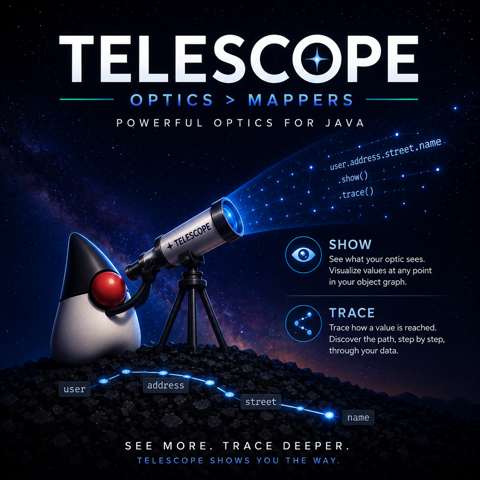

What did your mapper actually do? Now you can ask it.

Telescope, part 3 of 3: how it got built · why your mappings should not be strings · asking your mapper what it did
The setup
A field arrives null in production. The mapper between your entity and your DTO is the suspect,
and now you get to answer a simple question: what did it actually map?
If the mapper is MapStruct, the answer lives in one place: the generated
*MapperImpl.java under build/generated. You open it, you read the assignments, you diff what you
read against what you meant. If the question is about a specific request — which values went in,
which came out — generated source cannot answer it at all; you add a breakpoint or a log line,
redeploy, and wait for the bug to happen again.
This is not really a MapStruct flaw. Every mapper I know of is write-only: you declare the mapping, the tool does something, and the something is invisible until it is wrong.
Last time I argued the input side of
telescope: field names should be method references the
compiler checks, not strings. This post is the output side. A telescope mapper is not a black box;
it is a value you can interrogate. Three verbs: explain(), trace(input), and a log level.
explain(): the mapping, as data
Every Mapper<A, B> can describe its own structure. No input needed, nothing executes:
Mapper<Customer, CustomerDto> mapper = Telescope.mapper(
Customer.class, CustomerDto.class,
to(Customer::email, CustomerDto::getContactEmail));
System.out.println(mapper.explain());
// Mapped:
// ✓ email → contactEmail
// ✓ name → nameThat render is the demo, not the API. explain() returns an OpticReport, a list of typed nodes
you can query: mapped(), skipped(), transformations(), unusedSources(). Which means the
question “did I map everything?” stops being a code review and becomes a test:
// A strict mapper drops nothing, and CI proves it on every build:
assertThat(mapper.explain().skipped()).isEmpty();
// The rename is not folklore; it is enumerable data:
assertThat(mapper.explain().mapped()).contains(new Mapped("email", "contactEmail"));Sit with that second assertion for a moment. In MapStruct, the knowledge that email maps to
contactEmail exists in an annotation string and in generated code. Here it is a record you can
pull out of the mapper and assert on. When someone edits the mapper next quarter, the test tells
them what they changed.
A fuller mapper renders with sections, aligned so it reads as one table:
Mapped:
✓ firstName → givenName
Skipped:
• id (ignored)
Transformations:
• birthDate(String) → LocalDateRenames, intentional drops, type conversions: the whole shape of the mapping, printed by the mapping. There is nothing to keep in sync, because it is not documentation; it is the mapper describing itself.
trace(input): the same rows, with your values in them
explain() is static structure. trace(input) runs one conversion and fills in the value column,
whole nested graph included:
System.out.println(mapper.trace(order));
// ✓ id "o-1" → id "o-1"
// • customer Customer[name=Ada, email=ada@example.com] → customer CustomerDto[name=Ada, contactEmail=ada@example.com]
// • lines [LineItem[sku=sku-1, quantity=2, ...]] → lines [LineItemDto[sku=sku-1, quantity=2, ...]]This is the production question from the setup, answered directly: for this input, these values
went in, these came out, row by row. The trace never re-runs your conversion (it reads the result
you already have), and it is built not to make things worse: a field whose toString() throws
renders as (n/a) instead of taking the diagnostic down with it.
The log level: the same answers in production
You will not call trace() by hand in production, so the mapper does it for you. Every mapper logs
through java.lang.System.Logger, the facade that ships in java.base, under a logger named by
its type pair. It adds no dependency:
# JUL (the JDK default): one mapper, values per conversion
io.github.eschizoid.telescope.mapper.Order.OrderDto.level = FINER<!-- or Logback -->
<logger name="io.github.eschizoid.telescope.mapper.Order.OrderDto" level="TRACE"/>DEBUG logs each mapper’s explain() once, when it is built. TRACE adds the per-conversion
value trace on every forward(). Off, the default, costs nothing measurable: the call sites are
guarded before any message object exists. So the field-arrives-null investigation becomes: flip one
logger in config, watch the very next conversion narrate itself, flip it back. You never redeploy
and never dig through build/generated.
MapStruct has no equivalent surface, and it cannot cheaply grow one: its mapper is the generated code, so there is no runtime object that knows the mapping’s structure. Telescope’s mapper is a value that carries its own description around. That one architectural difference is where all three verbs come from.
The receipts: auditing my own library against MapStruct’s feature list
A capability pitch always gets the same response, and it is the right one: fine, but does it do X?
So instead of waiting for the question, I went through MapStruct’s whole feature surface and
scored telescope against every row: implicit conversions, expressions, qualifiers, lifecycle hooks,
@MappingTarget updates, builders, null-value strategies, decorators, subclass mapping,
29 features in total. Each verdict cites the telescope source and tests it rests on, and a
second adversarial pass re-checked every citation and every code snippet against the real API.
The result is the parity matrix: 13 features fully covered, 16 covered with a named limitation, none missing. I will not re-argue it here; the point of writing it down with evidence is that you can check it without trusting me.
Two parts of that audit embarrassed me, and both belong in this post.
First, the verification pass downgraded two of my own verdicts. I had scored constructor mapping
“full”; the second pass pointed out MapStruct’s @Default disambiguates multi-constructor classes and
telescope refuses them, so “partial” it is. The matrix is more honest because the process assumed I
was wrong.
Second, the audit found an actual bug. Telescope’s MapperBuilder.inherit(...) lets mappers share
row groups (its answer to @InheritConfiguration), and a group inherited into a mapper of the
wrong type pair was silently dropped: the mapper built cleanly and quietly lost the renamed
fields, while same-name auto-mapping masked the hole. That is precisely the class of silent failure
this whole library exists to kill, sitting in my own code. It fails fast now, with an error naming
the unreachable pair and its rows, and the fix landed before this post did. An audit that only
produces a marketing table is a bad audit; this one filed a bug against its own author.
Migrating, one mapper at a time
The last post said “write your next mapper in telescope.” The migration guide now covers the mappers you already have: MapStruct and telescope run side by side indefinitely, so you translate one interface at a time with a pattern-by-pattern table, and introspection is what makes each step safe. Keep the old MapStruct mapper around for one golden assert:
// the migrated mapper drops nothing…
assertThat(mapper.explain().skipped()).isEmpty();
// …and for one golden input, old and new agree:
assertThat(mapper.forward(sample)).isEqualTo(oldMapStructMapper.toDto(sample));When both pass, delete the interface and move to the next one. The mapper that can prove what it does is also the mapper you can migrate to without holding your breath.
Closing
The strings argument from last time was about what you write. This one is about what you can know afterward: the mapping as data you can assert on, the values as a trace you can flip on from config, and a feature-by-feature audit you can check instead of trusting.
The ask is the same one, one line, Java 21 or later:
implementation("io.github.eschizoid:telescope-core:1.1.1")Then take the mapper that burned you last, the one where a field went quietly null and you found
out from a bug report, and ask the telescope version what it does: mapper.explain(). You will get
an answer. That is the whole post.